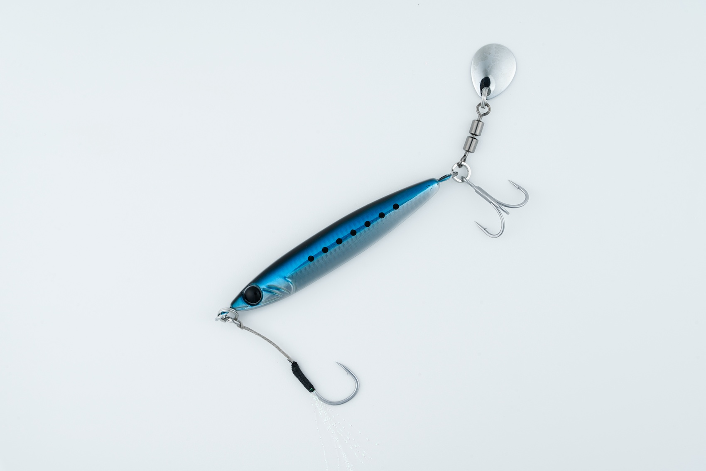
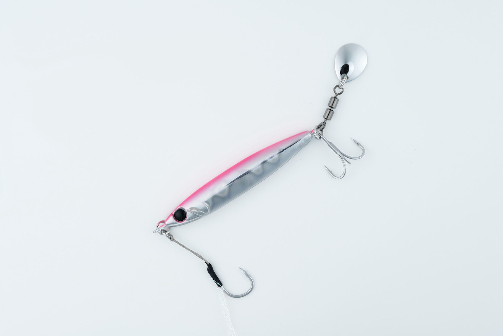
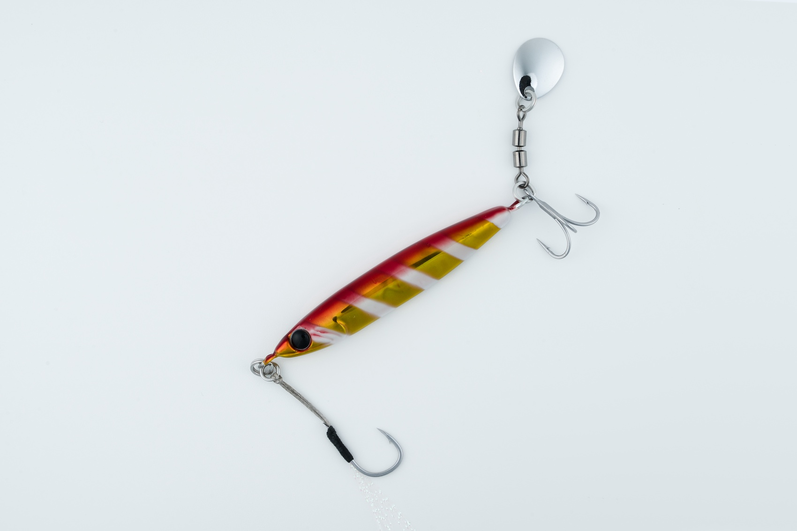
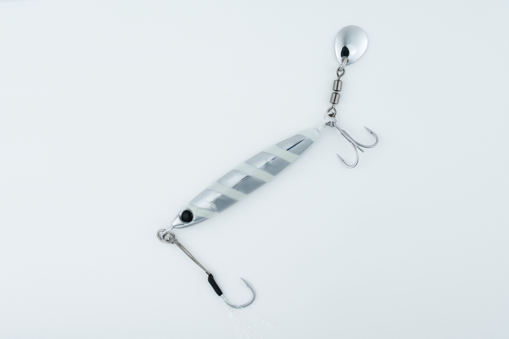

Zブレード
（Z-BLADE）
Zブレード（Z-BLADE）はZeake（ジーク）のブレード付きメタルジグです。
比重6.8の亜鉛合金を使った「Zサーディン」をベースに、ブレードチューンモデルとして再設計した1本。低比重素材とブレードの抵抗によるゆっくりしたフォールで、狙ったレンジを丁寧にトレースできるのが最大の魅力です。

画像出典:ジーク公式HP
スペック
- メーカー
- Zeake（ジーク）
- タイプ
- ブレード付きメタルジグ（亜鉛合金）
- ウエイト
- 20g／30g／40g／60g／80g
- フック
- フロント：シングル／リア：トリプル＋ブレード（ウエイト別）
- ターゲット
- 青物・フラットフィッシュ・タチウオ・ロックフィッシュ
- 価格
- 935円〜1,265円（税込）
▼今すぐチェック

Zブレードの特徴
亜鉛合金の低比重ボディとブレードで、ゆっくり見せて食わせる新発想ブレードジグ
-
亜鉛合金（比重6.8）でゆっくりフォール
鉛より比重の低い亜鉛合金を採用し、同じウエイトでもシルエットが大きくフォールスピードが遅い。ブレードの抵抗も加わり、狙ったレンジを長く・丁寧にトレースできる。
-
左右対称の円柱型ボディでアピールと操作性を両立
Zサーディンをベースに左右対称の円柱型ボディへ改良。フォール中はブレードが回転して強烈なフラッシングを生み、ターゲットの捕食本能を刺激する。
-
後方重心で飛距離と高速巻きの安定性を確保
後方重心設計と空気抵抗を抑えたボディ形状で十分な飛距離を確保。高速リトリーブでも水面に飛び出しにくく、安定したスイミングでレンジをキープする。
Zブレードの使い方
基本はキャストして着底させ、ただ巻きで探る。ブレードの回転とフラッシングで巻くだけでアピールできるので、まずはミディアムリトリーブで広く探っていく。
低比重素材を活かして、リフト＆フォールで「ゆっくり落ちる時間」を長く見せるのも有効。フォール中もブレードが回転するので、フォールで食わせるイメージで誘うとヒラメやタチウオの反応を引き出しやすいです。
Zブレードの得意な状況
サーフや堤防から、ボトム付近〜中層を広く探りたい状況が最大の出番。
フォールスピードを抑えたい浅場や、鉛のジグだとすぐ根掛かりしてしまうエリア、魚がゆっくりした動きにしか反応しない時に選びたい1本です。
ワンポイント
亜鉛合金は鉛に比べて同じウエイトでもボディが大きくなるため、普段使っている鉛ジグより一段重いウエイトを選ぶと沈下速度の感覚を合わせやすくなります。
高速巻きでも水面から飛び出しにくいので、青物のナブラ打ちで速巻きしたい時にも使えます。
Zブレードのウエイトの使い分け
| ウエイト | フック（フロント／リア） | 得意な場面 |
|---|---|---|
| 20g | シングル2S／トリプル#8 | 浅場・ライトタックルでの小型青物やロックフィッシュ |
| 30g | シングルS／トリプル#6 | ライトショアジギング・サーフの基準ウエイト |
| 40g | シングルM／トリプル#4 | 飛距離と操作性のバランス型・汎用性重視 |
| 60g | シングルM／トリプル#3 | 水深のある堤防や潮の速いエリア |
| 80g | シングルL／トリプル#2 | 深場・遠投が必要な青物狙い |
Zブレードは20g〜80gの5ウエイト展開。水深や潮の速さ、使うタックルに合わせてウエイトを選ぶのが基本だ。
オススメカラー
Zブレードは全10色展開。オススメのカラーを厳選して紹介します。

ZBL002 マイワシイワシパターンにマッチするナチュラル系。澄み潮やデイゲームの基準カラーに。

ZBL003 ピンクヒラメ・マゴチ狙いの定番ピンク。朝マズメのサーフで使いやすい。

ZBL009 ZGアカキン濁りやローライトに強いアカキン。ロックフィッシュや濁った日の青物に。

ZBL008 ゼブラグロータチウオの定番ゼブラグロー。夕マズメ〜夜のタチウオゲームに。
画像出典:ジーク公式HP
Zブレードに似ているルアー
-
 ジャックアイマキマキ
ハヤブサ
詳細はこちら＞
ジャックアイマキマキ
ハヤブサ
詳細はこちら＞
ホロ貼りブレード付きのただ巻き専用ジグ。巻くだけでブレードのフラッシングで誘い、スロージグライク形状でフォールでも食わせる考え方がZブレードと近い。
-
 フリッパーiTMB33
DUO
詳細はこちら＞
フリッパーiTMB33
DUO
詳細はこちら＞
ブレード付きのメタルバイブ。サーフや堤防からブレードのフラッシングで広く探るという狙いどころが重なる1本。
-
 ジグパラショート
メジャークラフト
詳細はこちら＞
ジグパラショート
メジャークラフト
詳細はこちら＞
ライトショアジギング定番のセンターバランスジグ。同じウエイト帯で、ジャークで誘いたい時はジグパラ、ゆっくり見せたい時はZブレードと使い分けられる。